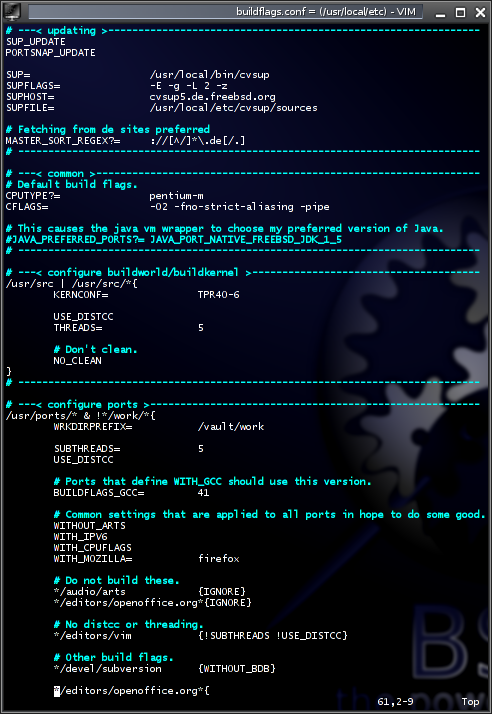

2.3. BSDAdminScripts
BSDAdminScripts ist eine Sammlung von Skripten für FreeBSD, die regelmäßige administrative Tätigkeiten erleichtern sollen.
2.3.1. buildflags
Buildflags besteht aus dem make(1) Skript buildflags.mk und dem awk(1) Skript buildflags.awk. Letzteres ist ein Parser für die Syntax von buildflags.conf, ersteres importiert das geparste Skript in die /etc/make.conf.
Nach der Installation muss noch folgendes in die /etc/make.conf eintragen werden, um die buildflags.conf zu verwenden:
# /usr/local/etc/buildflags.conf
BUILDFLAGS= /usr/local/share/bsdadminscripts/buildflags.mk
.if exists(${BUILDFLAGS})
.include "${BUILDFLAGS}"
.endif
2.3.1.1. Beispiele
 Um distcc bei einem buildworld oder buildkernel zu verwenden, in die /usr/local/etc/buildflags.conf einfach folgendes eingetragen werden:
{kind=link}
/usr/src | /usr/src/*{USE_DISTCC THREADS=4 KERNCONF=MYKERNEL}
USE_DISTCC wird von buildflags.mk interpretiert, das auch den Schalter USE_CCACHE zur Verfügung stellt. THREADS=4 hat den gleichen Effekt wie make mit dem Parameter ‚-j 4‘ aufzurufen. Die Ports bauen als sicher markierte Ports automatisch parallelisiert. Wer es riskieren will alles parallelisiert zu bauen, kann FORCE_MAKE_JOBS setzen. Für Ports würde diese Funktionalität also so aussehen:
/usr/ports & !*/work*{
FORCE_MAKE_JOBS
USE_DISTCC
}
Eine Variable die keinen Wert zugewiesen bekommt, erhällt automatisch den Wert ‚yes‘. Ein sehr vollständiges Beispiel findet man unter /usr/local/etc/buildflags.conf.sample. Die Manpage buildflags.conf(1) enthält eine ausführliche Beschreibung der Syntax.
2.3.1.2. Dokumentation
buildflags.mk(1)
buildflags.conf(1)
buildflags.awk(1)
2.3.2. distviper
Mit distviper können nicht mehr benötigte Distfiles entfernt werden.
Distfiles sind die Dateien die benötigt werden um einen Port zu
kompilieren.
2.3.2.1. Beispiele
Das folgende Beispiel entfernt alles in /usr/ports/distfiles was
nicht mehr von einem Port benötigt wird.
# distviper
Das nächste Beispiel entfernt alles in /usr/ports/distfiles was
nicht mehr von einem installierten Port benötigt wird.
# distviper fast
Mit dem nächsten Kommando fragt distviper vor dem Löschen von
Dateien um Erlaubnis.
# distviper -i
Es ist auch möglich sich nur von distviper anzeigen zu lassen, was
es tun würde.
2.3.2.2. Dokumentation
distviper(1)
2.3.3. pkg_libchk
Das Skript pkg_libchk prüft installierte Pakete darauf ob sie gegen
fehlende oder in /usr/local/lib/compat liegende Libraries verlinkt
sind. Das Skript ignoriert dabei Linux Binaries/Libraries und gibt nur
direkt verlinkte Pakete aus.
Dadurch werden nur die Pakete gelistet, die auch wirklich neu gebaut werden sollten. Wenn also ein Programm wegen fehlender Libraries nicht ausgeführt wird und vom Skript nicht aufgelistet wird, dann liegt es an einer indirekten Abhängigkeit.
Die Filterung von indirekten Abhängigkeiten kann auch verhindert werden, dann werden Pakete aufgelistet, die momentan nicht funktionsfähig sind, statt solchen die neu verlinkt (gebaut) werden müssen.
2.3.3.1. Beispiel
Ohne Parameter werden alle Pakete geprüft und alle vermissten Libraries werden gelistet.
# pkg_libchk
jdk-1.6.0.3p3: /usr/local/jdk1.6.0/jre/lib/i386/libJdbcOdbc.so misses libodbcinst.so
Working on package 339 of 697: libsigc++-2.0.18
Mit dem Parameter -q werden nur die Namen der betroffenen Pakete
ausgegeben. Es gibt auch keine Statusausgabe. Dadurch kann man die
Ausgabe zum Beispiel direkt in eine Datei schreiben oder an
portupgrade übergeben.
# pkg_libchk -q | xargs -o portupgrade -fu
2.3.3.2. Saubere Ausgabe
Es gibt einige Meldungen von JDKs und OpenOffice, da diese gegen
Libraries linken, die nicht vorhanden sind oder erst zur Laufzeit
gesucht werden. Diese Ausgaben können durch einige Zeilen in der Datei
/etc/libmap.conf unterdrückt werden:
# Clean up pkg_libchk output.
[libofficebean.so]
libjawt.so libc.so
[libJdbcOdbc.so]
libodbcinst.so libc.so
libodbc.so libc.so
2.3.3.3. Dokumentation
pkg_libchk(1)
2.3.4. pkg_upgrade
Mit pkg_upgrade können Updates mit Binärpaketen durchgeführt werden.
Dazu wird keine Kopie des Ports-Tree benötigt. Lediglich ein Paketindex
wird vom Paketserver geladen.
Pakete die nicht als Binärpakete verfügbar sind, z.B. wegen Lizenzeinschränkungen, werden ignoriert.
Im Falle eines Konflikts hat das vorhandene Paket Vorrang.
Downloads werden zum frühest möglichen Zeitpunkt bereits im Hintergrund gestartet und parallel von mehreren Mirrors durchgeführt. Leider ist die Aktualität der Mirrors sehr schlecht, so dass der Effekt begrenzt ist. Erfahrungsgemäß sind von 800 Paketen ca. 200 von den Mirrors zu bekommen.
Das über 2200 Zeilen lange Shell-Skript ist sehr ausführlich dokumentiert. Die formatierte Manual-Page ist über 500 Zeilen lang.
2.3.4.1. Beispiele
Der folgende Befehl aktualisiert alle Pakete, sofern sie als Binärpakete vorhanden sind.
# pkg_upgrade -a
Mit dem nächsten Befehl lässt sich lediglich anzeigen was passieren würde.
# pkg_upgrade -an
Und der folgende Befehl listet alle Pakete, die von pkg_upgrade
ignoriert werden.
# pkg_upgrade -d
Die Dokumentation enthält weitere Beispiele.
2.3.4.2. Dokumentation
pkg_upgrade(1)
2.3.5. pkg_validate
Das pkg_validate Skript prüft Pakete darauf ob noch alle Dateien vorhanden sind und die korrekte Prüfsumme haben. Die Ausgabe erfolgt in drei Spalten: Prüfsummen Fehler (csum), Fehlende Dateien (miss), Paketname (package) und Paket-Ursprung (origin).
2.3.5.1. Beispiel
Um alle Pakete zu prüfen reicht es das Skript ohne Parameter aufzurufen:
# pkg_validate
csum miss package origin
0 7 apache-2.2.4_2 www/apache22
0 3 gstreamer-plugins-bad-0.10.4_2,3 multimedia/gstreamer-plugins-bad
1 0 sdl_ttf-2.0.8_2 graphics/sdl_ttf
1 0 vpnc-0.4.0_1 security/vpnc
1 0 xdm-1.1.4_2 x11/xdm
5 of 746 packages appear to be damaged.
Um eine Unformatierte Ausgabe mit der Pipe als Trennzeichnen zu erhalten reicht folgender Aufruf:
# pkg_validate -rd\|
0|7|apache-2.2.4_2|www/apache22
0|3|gstreamer-plugins-bad-0.10.4_2,3|multimedia/gstreamer-plugins-bad
1|0|sdl_ttf-2.0.8_2|graphics/sdl_ttf
1|0|vpnc-0.4.0_1|security/vpnc
1|0|xdm-1.1.4_2|x11/xdm
Der Parameter -r erzeugt eine unformatierte Ausgabe, der Parameter -d ändert das Trennzeichen.
2.3.5.2. Dokumentation
pkg_validate(1)
2.3.6. portconfig
Portconfig führt make Ziele in Ports aus, die portupgrade updaten würde. Für diese Funktionalität wird portupgrade als Abhängigkeit benötigt.
2.3.6.1. Beispiele
Um zum Beispiel vor einem
# portupgrade -a
noch einmal alle Konfigurationsdialoge zu kontrollieren, kann einfach
# portconfig -a
ausgeführt werden.
2.3.6.2. Dokumentation
portconfig(1)
2.3.7. rcstart
Dieses Skript ermöglicht es einfach auf rc.d-Skripte zuzugreifen. Die Skripte werden anhand des PROVIDE Schlüsselwortes in den Skripten identifiziert. Natürlich können mehrere Skripte angeben oder Regular Expressions verwendet werden.
2.3.7.1. Beispiele
Zum Beispiel beendet der Aufruf
# rcstop '.*sql'
alle SQL Server wie MySQL und PostgreSQL. Für Dienste die nicht häufig benötigt werden ist oft keinen Eintrag in der /etc/rc.conf vorhanden. Solche Dienste werden mit dem Befehl rconestart gestartet.
# rconestart apache22 postgresql
2.3.7.2. Dokumentation
* rcstart(1)
2.3.8. Verweise
Zuletzt geändert: 2023-07-21